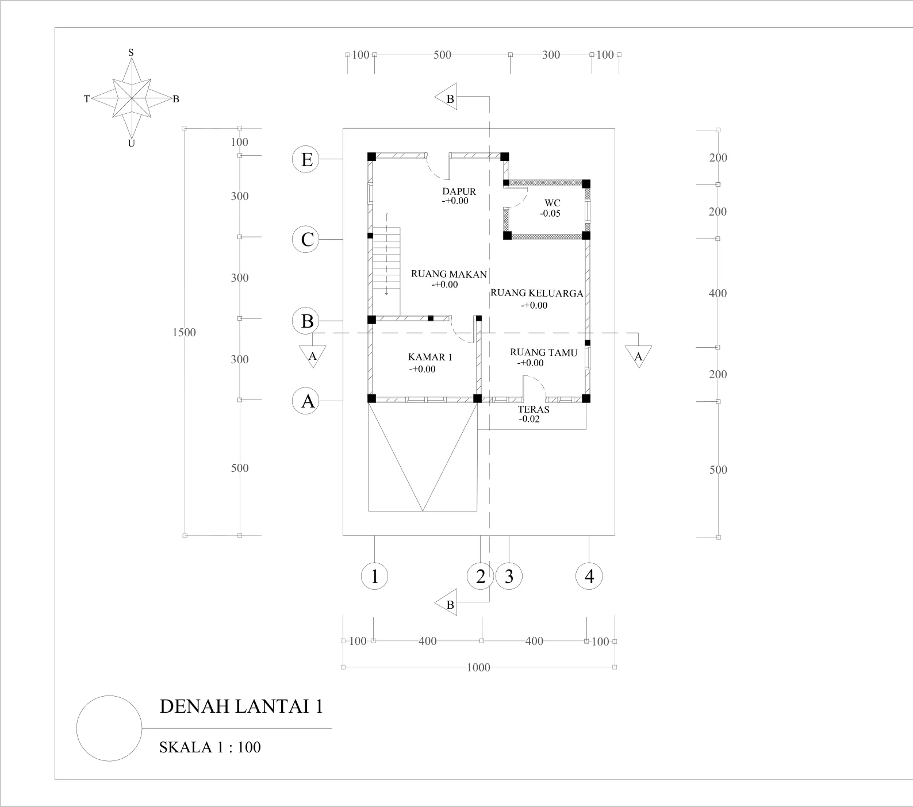
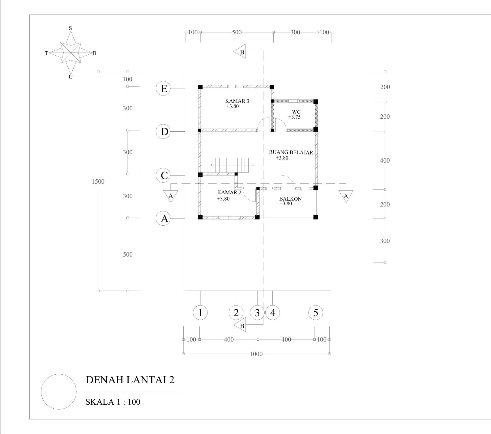
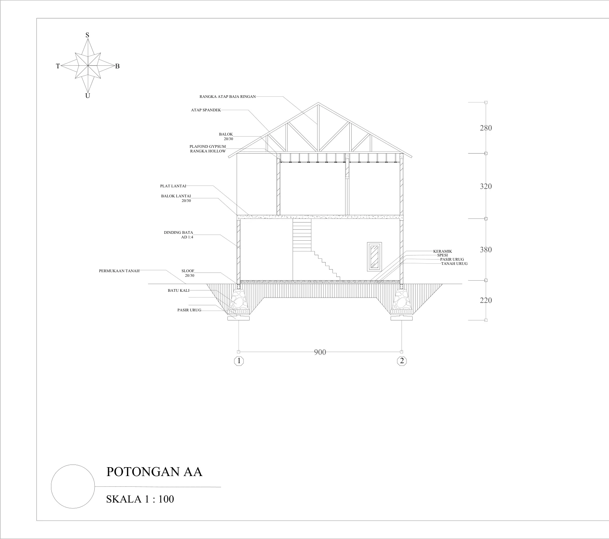
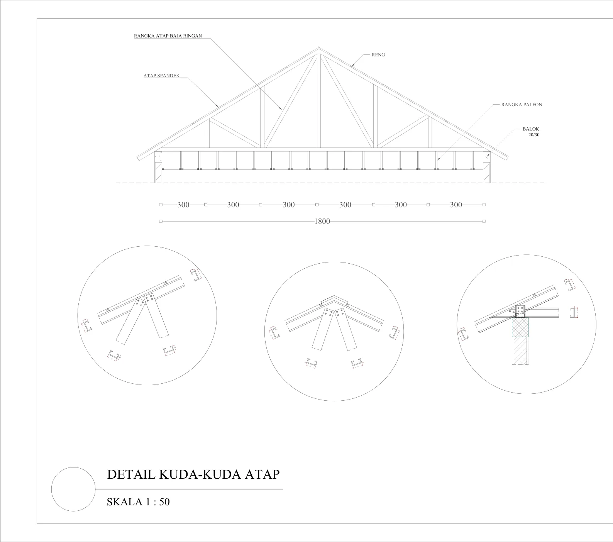
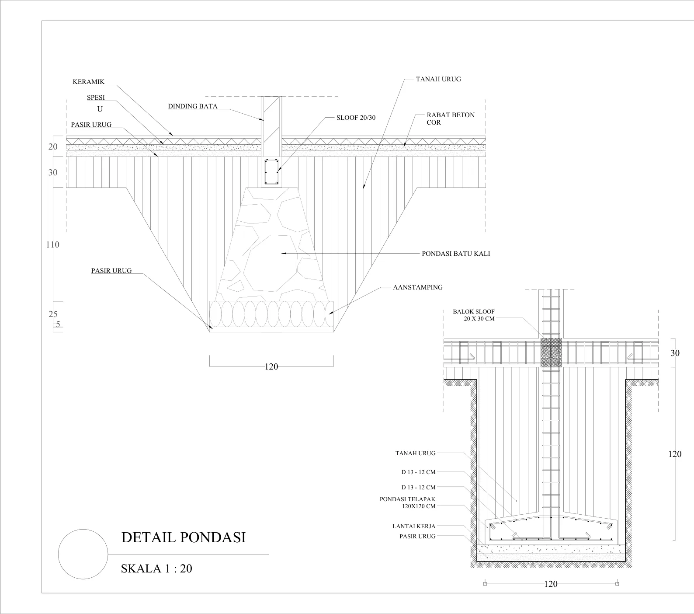

Gambar kerja rumah tinggal 2 lantai (29 lembar)
Gambar kerja pertama saya: denah, tampak, potongan, denah kolom dan balok, rencana fondasi, atap, plafon, instalasi listrik dan sanitasi, sampai detail tangga, kusen, septic tank, dan kuda-kuda.
- Acara atau tempat
- Tugas besar Menggambar Struktur Bangunan 1, Universitas Jambi
- Tahun
- 2023
- Peran saya
- Penggambar (tugas individu).
- Hasil
- Arsitektur, struktur, utilitas, dan detail
- Perangkat lunak
- AutoCAD
- Jenis
- Gambar/DED
Lembar pilihan










